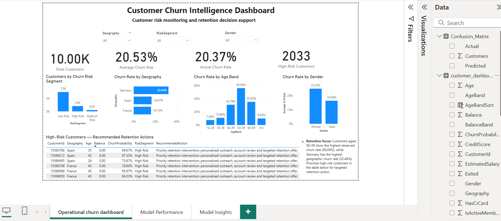
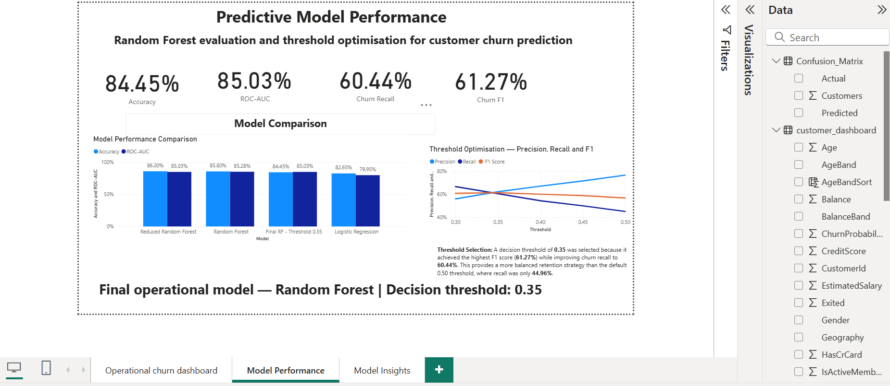
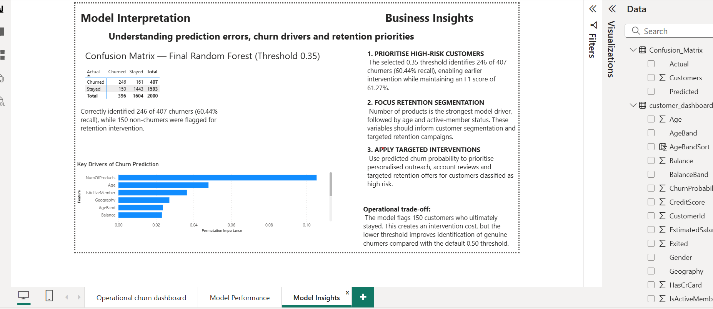

An end-to-end machine learning project developed to identify customers at elevated risk of churn and translate model outputs into practical retention decision support.
The project explored whether customer information could be used to identify customers who were more likely to leave and whether those predictions could be translated into useful retention priorities.
The dataset contained 10,000 customer records, with an observed churn rate of approximately 20.37%. Because the churn class was substantially smaller than the non-churn class, model evaluation focused on more than overall accuracy. Churn recall, F1 score and ROC-AUC were considered alongside accuracy.
Multiple approaches were compared so that the final model choice was based on evidence rather than on a single algorithm.
| Model | Accuracy | ROC-AUC | Interpretation |
|---|---|---|---|
| Logistic Regression | 82.65% | 79.95% | Useful baseline, but lower discrimination and churn recall. |
| Random Forest | 85.80% | 85.28% | Stronger overall predictive performance. |
| Reduced Random Forest | 86.00% | 85.03% | Similar performance with a more focused feature set. |
The default 0.50 classification threshold was not accepted automatically. At that threshold the model produced relatively high churn precision but identified fewer genuine churners. Lower thresholds were therefore tested to investigate the operational trade-off.
| Threshold | Precision | Recall | F1 |
|---|---|---|---|
| 0.50 | 76.57% | 44.96% | 56.66% |
| 0.40 | 66.97% | 54.30% | 59.97% |
| 0.35 | 62.12% | 60.44% | 61.27% |
| 0.30 | 55.88% | 66.58% | 60.76% |
True positives: 246
False negatives: 161
False positives: 150
True negatives: 1,443
The model identified 246 of 407 actual churners, corresponding to 60.44% recall.
The lower threshold also resulted in 150 customers who ultimately stayed being flagged for retention activity.
This represents a deliberate trade-off: more genuine churners are surfaced for intervention, but additional retention capacity may be required.
Permutation feature importance was used to investigate which variables contributed most strongly to the model's predictions.
1. Number of Products
2. Age
3. Active Member Status
4. Geography
5. Age Band
6. Balance
Feature importance indicates predictive contribution, not causation. A feature associated with churn should therefore be treated as a signal for investigation or segmentation rather than evidence that it causes a customer to leave.
Model outputs were translated into a three-page Power BI solution so that prediction results could be explored by both operational and analytical users.
Provides total-customer, churn-risk, actual-churn and high-risk KPIs, interactive slicers, churn analysis by geography, age and gender, and a customer-level retention action table.
Compares model performance and communicates accuracy, ROC-AUC, churn recall, F1 and the threshold precision-recall trade-off.
Explains the final confusion matrix, important model drivers and business implications of the selected churn strategy.
The dashboard provides a route from prediction to risk identification, interpretation and retention action rather than leaving the output solely within a technical notebook.
The operational dashboard translates model predictions into an accessible decision-support view, allowing high-risk customers and key churn patterns to be explored interactively.

Figure 1. Power BI operational churn dashboard developed to support customer-risk monitoring and targeted retention decisions.
The model-performance view brings together the final evaluation metrics, comparison across candidate models and the precision-recall-F1 trade-off used to select the operational decision threshold.

Figure 2. Model-performance dashboard comparing candidate models and showing the threshold optimisation used to select the 0.35 operating point.
The model-insights view explains prediction errors, important model drivers and the business implications of the selected retention strategy.

Figure 3. Model-insights dashboard presenting the final confusion matrix, churn drivers and business-focused retention recommendations.
Results are based on one historical public dataset and should not be treated as guaranteed production performance. Churn behaviour, customer mix and data quality may change over time.
Age, gender and geography may create fairness concerns in a real banking environment. Predictions should support proportionate human-reviewed retention decisions rather than automated adverse treatment of customers.
A deployed model would require monitoring of churn prevalence, score distributions, recall, ROC-AUC, calibration and segment-level performance.
Predictive performance does not prove that a retention intervention prevents churn. Controlled testing would be required to measure incremental business impact.
This project reinforced that model selection cannot be based on accuracy alone. The most useful operating point depends on the business consequences of different error types.
It also demonstrated the importance of connecting technical model outputs to accessible decision-support tools. The strongest solution was not simply the model with the best score, but the combination of predictive modelling, threshold evaluation, interpretation and operational visualisation.
← Back to Portfolio